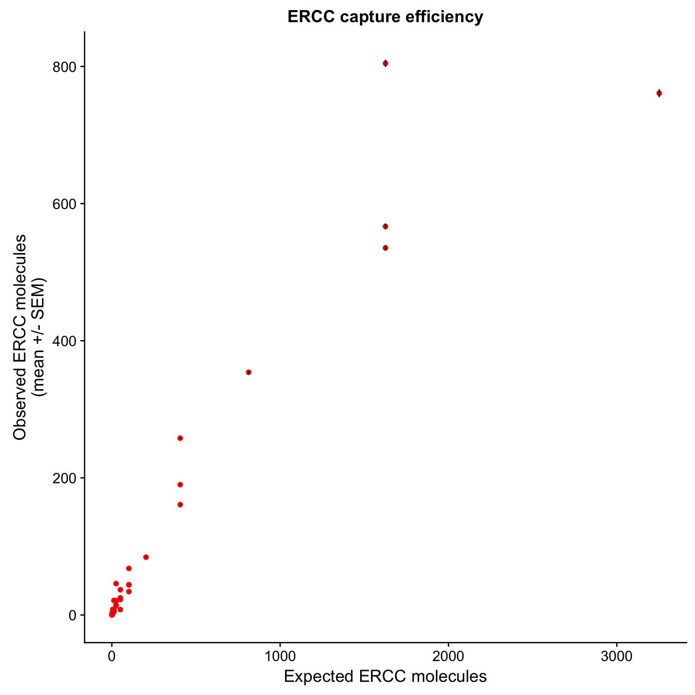
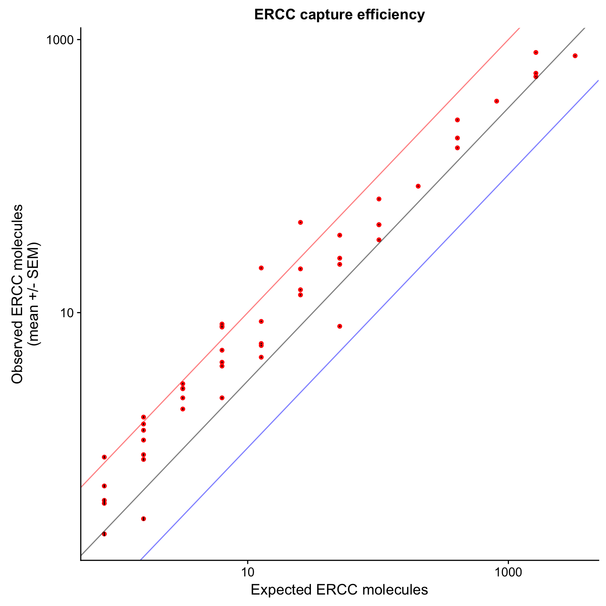

Last updated: 2018-03-01
Code version: 6b16d24
library("cowplot")
library("ggplot2")
library("knitr")
theme_set(theme_cowplot())
source("../code/functions.R")
library("Biobase") # has to be loaded last to use `combine`Import data.
eset <- readRDS("../data/eset.rds")
dim(eset)Features Samples
54792 6432 Keep only ERCC
eset <- eset[fData(eset)$source == "ERCC", ]
dim(eset) Features Samples
92 6432 Only keep high-quality single cells.
quality <- read.table("../data/quality-single-cells.txt", stringsAsFactors = FALSE)
colnames(quality) <- c("sample", "quality")
eset <- eset[, quality$quality]
dim(eset)Features Samples
92 4995 Remove zeros.
eset <- eset[rowSums(exprs(eset)) != 0, ]
dim(eset)Features Samples
92 4995 correct for collision probability.
eset_data <- exprs(eset)
eset_data_cr <- as.data.frame(-4^6*log(1-eset_data/4^6))
dim(eset_data_cr)[1] 92 4995## input ERCC information
## from https://www.thermofisher.com/order/catalog/product/4456740
ercc <- read.table("../data/ercc-info.txt", header = TRUE, sep = "\t",
stringsAsFactors = FALSE)
colnames(ercc) <- c("num", "id", "subgroup", "conc_mix1", "conc_mix2",
"expected_fc", "log2_mix1_mix2")
head(ercc) num id subgroup conc_mix1 conc_mix2 expected_fc log2_mix1_mix2
1 1 ERCC-00130 A 30000.000 7500.00000 4 2
2 2 ERCC-00004 A 7500.000 1875.00000 4 2
3 3 ERCC-00136 A 1875.000 468.75000 4 2
4 4 ERCC-00108 A 937.500 234.37500 4 2
5 5 ERCC-00116 A 468.750 117.18750 4 2
6 6 ERCC-00092 A 234.375 58.59375 4 2stopifnot(nrow(ercc) == 92)
## concentration of each ERCC was provided in attomoles per uL
summary(ercc$conc_mix1) Min. 1st Qu. Median Mean 3rd Qu. Max.
0.014 0.801 7.324 1125.163 117.188 30000.000 ## mix 1 was diluted 1:2500 before adding to lysis buffer
ercc_conc_diluted <- ercc$conc_mix1 / 2500
## 1 ul was added to make 20 ul lysis buffer
ercc_conc_lysis <- ercc_conc_diluted / 20
## molecule number in the 20 ul lysis buffer
ercc_molecules_lysis <- ercc_conc_lysis *
20 * # Number of uL of lysis buffer
1/10^18 * # Number of attomoles in a mole
6.02214179e23 # Number of molecules in a mole
## 9 nl of lysis buffer in each cell capture well
## note: the molecule number is the same as the ones from the table provided by fluidigm
ercc_molecules_well <- ercc_molecules_lysis * 9e-3 / 20
summary(ercc_molecules_well) Min. 1st Qu. Median Mean 3rd Qu. Max.
0.002 0.087 0.794 121.966 12.703 3251.957 sum(ercc_molecules_well)[1] 11220.88sum(ercc_molecules_well >= 1)[1] 45## output the expect number per well
write.table(data.frame(id = ercc$id, conc_mix1 = ercc$conc_mix1, ercc_molecules_well),
"../data/expected-ercc-molecules.txt", sep = "\t", quote = FALSE,
row.names = FALSE)Using the code from previous analysis
## import expected ercc molecule number
ercc <- read.table("../data/expected-ercc-molecules.txt", header = TRUE,
stringsAsFactors = FALSE)
head(ercc) id conc_mix1 ercc_molecules_well
1 ERCC-00130 30000.000 3251.95657
2 ERCC-00004 7500.000 812.98914
3 ERCC-00136 1875.000 203.24729
4 ERCC-00108 937.500 101.62364
5 ERCC-00116 468.750 50.81182
6 ERCC-00092 234.375 25.40591## calculate efficiency using expected molecule more than 0.5
ercc_list <- list()
for (spike in ercc$id[ercc$ercc_molecules_well >= 0.5]) {
if (spike %in% rownames(eset_data)) {
ercc_list$id <- c(ercc_list$id, spike)
ercc_list$observed_mean <- c(ercc_list$observed_mean,
mean(as.numeric(eset_data[spike, ])))
ercc_list$observed_sem <- c(ercc_list$observed_sem,
sd(as.numeric(eset_data[spike, ])) /
sqrt(ncol(eset_data)))
ercc_list$expected <- c(ercc_list$expected,
ercc$ercc_molecules_well[ercc$id == spike])
}
}
ercc_plot <- as.data.frame(ercc_list, stringsAsFactors = FALSE)
str(ercc_plot)'data.frame': 50 obs. of 4 variables:
$ id : chr "ERCC-00130" "ERCC-00004" "ERCC-00136" "ERCC-00108" ...
$ observed_mean: num 760.95 353.95 84.35 43.98 7.94 ...
$ observed_sem : num 5.8358 2.4784 0.6528 0.3748 0.0852 ...
$ expected : num 3252 813 203.2 101.6 50.8 ...cor(ercc_plot$observed_mean, ercc_plot$expected)[1] 0.946599p_efficiency <- ggplot(ercc_plot, aes(x = expected, y = observed_mean, label = id)) +
geom_point(col = "red") +
geom_errorbar(aes(ymin = observed_mean - observed_sem,
ymax = observed_mean + observed_sem), width = 0) +
labs(x = "Expected ERCC molecules",
y = "Observed ERCC molecules\n(mean +/- SEM)",
title = "ERCC capture efficiency")
p_efficiency
p_efficiency_plot <- p_efficiency +
scale_x_log10() +
scale_y_log10() +
geom_abline(intercept = 0, alpha = 0.5, col = "red") +
geom_abline(intercept = - 0.50, alpha = 0.5) +
geom_abline(intercept = - 0.99, alpha = 0.5, col ="blue") +
labs(x = "Expected ERCC molecules",
y = "Observed ERCC molecules\n(mean +/- SEM)",
title = "ERCC capture efficiency")
p_efficiency_plot
This R Markdown site was created with workflowr